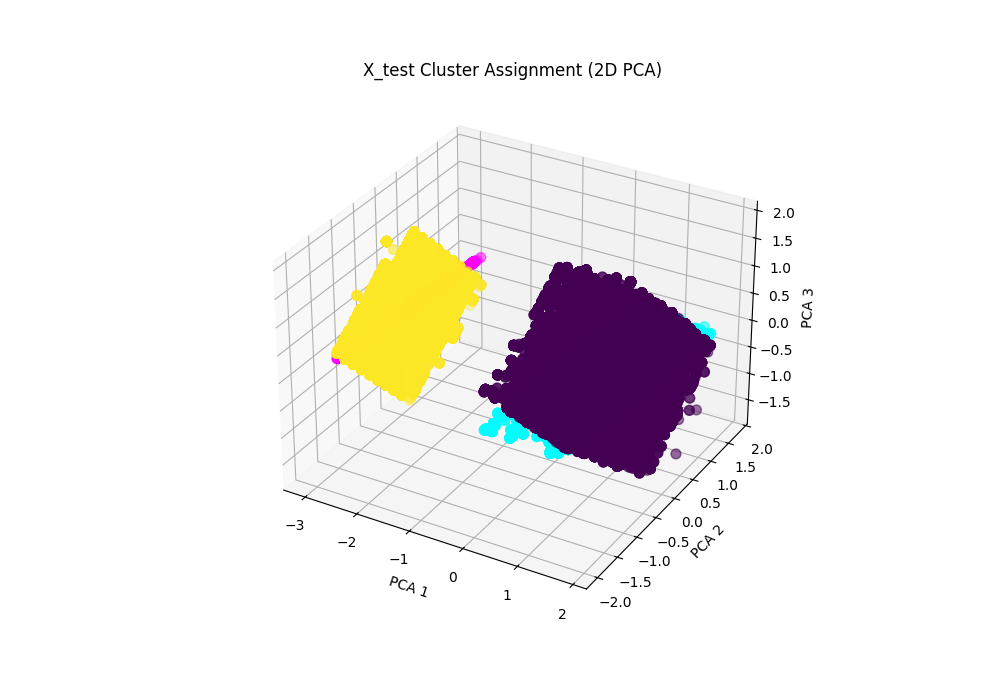

Kmeans Clustering

In this project, I developed an end-to-end customer segmentation pipeline using unsupervised machine learning to uncover distinct customer groups from retail transaction data. The process began with comprehensive data preprocessing: irrelevant columns were removed, missing values handled, and time-based features (hour, minute) engineered from invoice timestamps. Aggregated metrics such as total quantity and unit price per customer were computed to derive meaningful behavioral insights.

I applied RobustScaler to normalize numerical features and ensure model robustness against outliers. To determine the optimal number of clusters, I used the silhouette score across a range of K values (2–10), selecting the value that maximized clustering effectiveness. Dimensionality reduction via PCA allowed for intuitive 2D and 3D visualization of clusters and centroids, offering a clear view into customer segmentation structure.
The final model leveraged the K-Means algorithm for clustering, followed by evaluation using Adjusted Rand Index (ARI) and Normalized Mutual Information (NMI) to compare clustering results with actual behavioral metrics. While the evaluation involved continuous targets, it still provided insights into clustering performance. This project highlights my ability to design scalable machine learning workflows, perform insightful data transformations, and communicate results through visualizations.
- Built an end-to-end customer segmentation pipeline using unsupervised learning on retail transaction data.
- Engineered time-based features (hour, minute) from invoice timestamps and aggregated metrics by customer ID.
- Applied data cleaning, normalization (RobustScaler), and dimensionality reduction using PCA.
- Determined optimal number of clusters using silhouette score and implemented K-Means for clustering.
- Visualized cluster assignments in 2D and 3D to identify meaningful customer segments.
- Evaluated clustering quality using Adjusted Rand Index (ARI) and Normalized Mutual Information (NMI).
- Demonstrated practical application of clustering techniques to support customer behavior analysis.
View the source code at my Github here!:
Back to Clustering Projects.